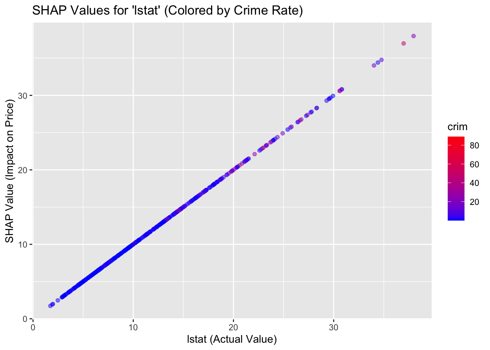

── Conflicts ────────────────────────────────────────── tidyverse_conflicts() ──
✖ dplyr::combine() masks randomForest::combine()
✖ dplyr::explain() masks lime::explain()
✖ dplyr::filter() masks stats::filter()
✖ dplyr::lag() masks stats::lag()
✖ ggplot2::margin() masks randomForest::margin()
✖ dplyr::select() masks MASS::select()
ℹ Use the conflicted package (<http://conflicted.r-lib.org/>) to force all conflicts to become errors
Code
library(caret)
Loading required package: lattice
Attaching package: 'caret'
The following object is masked from 'package:purrr':
lift
Code
data("Boston")X <- Boston %>%select(-medv)y <- Boston$medvset.seed(42)train_index <-createDataPartition(y, p =0.8, list =FALSE)X_train <- X[train_index, ]y_train <- y[train_index]X_test <- X[-train_index, ]y_test <- y[-train_index]rf_model <-randomForest(X_train, y_train, ntree =500)lm_model <-lm(medv ~ ., data = Boston[train_index, ])rf_model
Call:
randomForest(x = X_train, y = y_train, ntree = 500)
Type of random forest: regression
Number of trees: 500
No. of variables tried at each split: 4
Mean of squared residuals: 11.55371
% Var explained: 85.85
Code
lm_model
Call:
lm(formula = medv ~ ., data = Boston[train_index, ])
Coefficients:
(Intercept) crim zn indus chas nox
33.998764 -0.122347 0.043296 0.003389 1.554178 -15.555219
rm age dis rad tax ptratio
3.859758 0.004788 -1.305775 0.319482 -0.012468 -0.953531
black lstat
0.009516 -0.516037
Code
library(fastshap) # For fast SHAP approximations
Attaching package: 'fastshap'
The following object is masked from 'package:dplyr':
explain
The following object is masked from 'package:lime':
explain
crim zn indus chas nox rm age
0.51302044 0.05223589 0.34801011 0.05687939 0.86705348 2.51544185 0.37886528
dis rad tax ptratio black lstat
0.63195177 0.09928622 0.30506053 0.65355903 0.28250744 3.63036893
After knowing about the model differences, it is essential to check for consistency in features for the SHAP random forest model for Boston housing dataset.
Here, Knn equals to 5 is a way to understand the local consistency, like it helps me to measure how stable the features are compared to its 5 most similar neighbors.
I could interpret from the data that the average SHAP differences is low for the features like: -crim, -zn, -indus, -chas, -age, -dis, -rad, -tax, -ptratio, -black.
However, there is a high average differences for the features: -rm, -lstat, -nox
Then, I made a PDP and ICE plot for knowing the reasons like why some features were not consistent:
Code
library(pdp)
Attaching package: 'pdp'
The following object is masked from 'package:purrr':
partial
Code
library(ggplot2)# Partial Dependence Plotpdp_lstat <-partial(rf_model, pred.var ="lstat", train = X_train)ggplot(pdp_lstat, aes(lstat, yhat)) +geom_line() +labs(title ="Partial Dependence of 'lstat' on Price")
From the graphs, I could notice that the trend of the curves show similar pattern, which is that as the number of the lower percentage of the population increases, the house price decreases significantly.
The pdp is non-linear and drops significantly within the 0-10 range for lstat, which implies that the house price is highly sensitive to lstat.
Since the high inconsistency and non-linearity appear for the feature lstat, I made the graph for the rm+ lstat for knowing if lstat has an interaction with rm that causes the SHAP’s explanation to be inconsistent.
Code
library(fastshap)shap_values <-explain(rf_model, X = X_train, nsim =50, pred_wrapper = pred_fun)shap_values <- fastshap::explain( rf_model, X = X_train, pred_wrapper = pred_fun, nsim =50)shap_df <-as.data.frame(shap_values)shap_df$lstat <- X_train$lstat shap_df$crim <- X_train$crim library(ggplot2)ggplot(shap_df, aes(lstat, lstat, color = crim)) +geom_point(alpha =0.5) +scale_color_gradient(low ="blue", high ="red") +labs(title ="SHAP Values for 'lstat' (Colored by Crime Rate)",x ="lstat (Actual Value)",y ="SHAP Value (Impact on Price)" )

I think from the graph above, it shows that the lstat and crim together give a strong impact on the SHAP value (House price). As the population of the lower percentage of status increases and the number of crime goes higher, the impact on the house price increases. Therefore, it explains for why there is a high inconsistency for the lstat feature itself-there is a strong interaction! Similarly, I think the high inconsistency for nox and rm could also be influenced by the interaction effects.
Then, I explore the feature significance in linear regression model, and notice that chas is the feature with no significance. It is because the p-value for chas is larger than the standard threshold, 0.05.
But again, I believe it is still an important feature even though it is not statistically significant. In fact, it is important as it might have an interaction effect or it might has the coefficient value.
From the comparison graph, I can easily detect that SHAP highlights some important features that might not count as important in the linear regression model. Similarly, linear regression has some features that are not count important in the SHAP random forest model. The major differences could be due to the fact that linear regression model assumes linearity, which only captures additive, proportional relationships between the features and the target. But SHAP for random forest model captures the non-linearity and interactions. Random forest splits the data based on thresholds and combinations of features.
However, I can still detect that there are some alignments for multiple features in the linear regression model and SHAP’s random forest model. It is because some features have a consistent directional effect on the target variable, no matter modeled linearly or non-linearly.
I took nox as an example in the graphs and analysis section, so more details in the difference will be explained there.